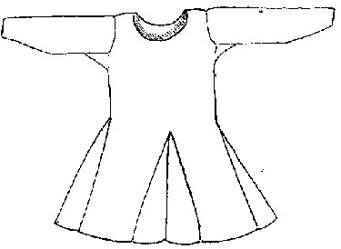
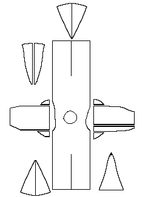

Tunic
The Bocksten Bog Man

The Tunic after conservation.
(After a photo in Nockert)
Under his cloak, the Bocksten Bog Man wore a tunic sewn of
a now yellow-brown woolen twill, which is reddish-brown on the reverse. There is some
difference in quality between the headpiece, the sleeves, the gores, but not enough to
suggest that these latter parts were made from a different fabric.
The front and back of the tunic are of a piece, in other words, there are no shoulder
seams, with an opening cut for the head. The width of the tunic's skirt has been increased
by the the insertion of gores in the front, back and sides.
The sleve openings are flat and somehat differently cut. The sleaves are wide at the
top, and narrow at the bottom. The left sleeve is cut in one piece with two small gores
underneath. The right consists of two pieces joined together; a larger at the fron, and aa
narrower one at the back. Like the left sleeve, it has two gores underneath. The sleeves
have a 1cm hem at the cuff.
No traces of a lining have been found in this tunic.
Only minor alterations have been made to Dr. Albert Sandklef's original reconstruction
of the Tunic.

Line drawing of the Tunic, based on one by E.
Lundwall. Bold lines indicate selvages edges. Otherwise arrows indicate direction of
weave.
- Tunic Material Length (over the shoulders): 230 cm (90.2")
- Width at the Bottom: 250 cm (98.4")
- Neck Opening Circumference: 82 cm
- Arm Length, Right: 61 cm (24")
- Arm Length, Left: 59.5 cm (23.4")
- Sleeve Material Width, Shoulder End, Right: 55 cm (21.6") [58 cm when measured in
1936]
- Sleeve Material Width, Shoulder End, Left: 53 cm (20.9") [50 cm when measured in
1936]
- Sleeve Material Width, Cuff End, Right: 23 cm (9")
- Sleeve Material Width, Cuff End, Left: 22 cm (8.7")
- Loom Width: not less than 55 cm (21.6") [Although there are no pieces with more
than one selvege edge, so an exact statement can not be made]
- Total Material Length: about 450 cm (177.2")
Torso Material Thread Count
- Warp is 8-9 Z-spun threads/cm (21.6-22.9 threads per inch) [Fleece: "Hairy
Medium"]
- Weft is 7-8 S-spun theads/cm (19.05-21.6 threads per inch) [Fleece: "Hairy"]
Sleeve
Material Thread Count
- Warp is 9 Z-spun threads/cm (22.9 threads per inch)
- Weft is 7 S-spun theads/cm (19.05 threads per inch)
Gore Material Thread Count
- Warp is 10 Z-spun threads/cm (25.4 threads per inch) [Fleece: "Hairy Medium"]
- Weft is 7 S-spun theads/cm (19.05 threads per inch) [Fleece: "Hairy Medium"]
Gore
Material Thread Count
- Warp is 10 Z-spun threads/cm (25.4 threads per inch) [Fleece: "Hairy Medium"]
- Weft is 8 S-spun theads/cm (20.3 threads per inch) [Fleece: "Hairy Medium"]
Some Sources:
- Nockert, Margareta. Bockstenmannen, Och Hans Dr�kt. Halmstad och Varberg:
Stiftelsen Hallands l�nsmuseer, 1985.
Go to Tunic Page; Bocksten Bog Site
Page or Proceed
Some Clothing of the Middle Ages, by I. Marc Carlson, Copyright 1996 This code is
given for the free exchange of information, provided the Author's Name is included in all
future revisions, and no money change hands-